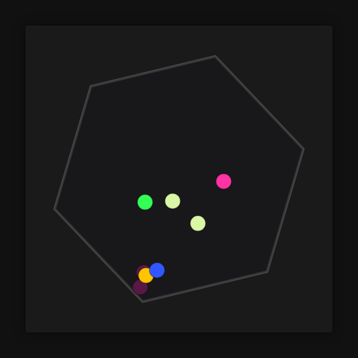

Qwen3.5-9B OptiQ 4bit, 맥에서 직접 돌려 본 실측 결과
맥 스튜디오 M5 Max(48GB) 환경에서 가볍고 빠르게 한국어·코딩 작업을 처리할 때 적합합니다.
mlx-community의 Qwen3.5-9B-OptiQ-4bit 모델을 mlx-lm 0.32.0으로 측정했습니다. 짧은 입력 기준 답 쓰는 속도는 초당 81.2토큰으로, 사람이 읽는 속도(초당 약 5토큰)보다 훨씬 빠릅니다. 최대 메모리 사용량은 8.8GB로 확인되었습니다.
이 맥에서 잰 숫자
| 모델 | Qwen3.5-9B-OptiQ-4bit |
|---|---|
| 원본 저장소 | mlx-community/Qwen3.5-9B-OptiQ-4bit |
| 가중치 용량(GB) | 8 |
| 라이선스 | apache-2.0 |
| 측정 기기 | 맥 스튜디오 M5 Max, 통합 메모리 48GB |
| 측정 도구 | mlx-lm 0.32.0 (MLX 0.32.3) |
| 측정일 | 2026-10-21 |
| 짧은 입력(512토큰) 답 쓰는 속도(토큰/초) | 81.2 |
| 짧은 입력 읽는 속도(토큰/초) | 2972 |
| 긴 입력(4096토큰) 답 쓰는 속도(토큰/초) | 80.1 |
| 긴 입력 읽는 속도(토큰/초) | 3613 |
| 최대 메모리 사용(GB) | 8.8 |
| 한국어 답변 점수(5점 만점) | 5 |
| 한국어 답변에 외국어 섞임 | 없음 |
| 한국어 객관식(KMMLU 50문항) 정답 | 27 / 50 |
| 도구 호출 정확도(10문항) | 10 / 10 |
| 파이썬 코딩(10문제, 테스트 전부 통과) | 10 / 10 |
| 형식 지시 따르기(10문항) | 9 / 10 |
| 긴 글 속 문장 찾기(약 16K토큰) | 찾음 (6초) |
| 긴 글 속 문장 찾기(약 32K토큰) | 찾음 (12.9초) |
| 한 번에 만든 튀는 공 애니메이션 | 움직임 |
답 쓰는 속도는 1초에 만들어 내는 토큰(글자 조각) 수입니다. 같은 모델도 기기·메모리·도구 버전에 따라 달라집니다.
한국어로 물어봤더니
질문: 맥에서 로컬 AI 모델을 처음 써 보려는 대학생에게, 장점 두 가지와 주의할 점 한 가지를 한국어로 짧게 알려 줘.
맥에서 로컬 AI 모델을 처음 써 보시는 대학생분께 드리는 조언입니다: **장점** 1. **개인 정보 보호**: 데이터가 외부 서버로 전송되지 않아 기밀 유지가 완벽합니다. 2. **오프라인 사용 가능**: 인터넷 연결이 끊겨도 언제 어디서나 즉시 활용 가능합니다. **주의할 점** * **하드웨어 사양 확인**: 모델 실행을 위해 맥의 RAM(메모리) 과 GPU(그래픽 처리 장치) 가 충분히 강력해야 합니다.
요청된 형식과 내용을 정확히 전달했으며 문장이 자연스럽습니다.
한 번에 만든 튀는 공 애니메이션
"회전하는 육각형 안에서 공 8개가 튀는 HTML 을 한 파일로 만들어 줘"라는 요청에 처음 낸 답을 그대로 실행한 화면입니다.

이럴 때 맞아요
- 맥 스튜디오 M5 Max에서 로컬 llm 구축
- 한국어 자연어 처리 및 형식 지시 준수
- 파이썬 코딩 및 도구 호출 작업
이럴 때는 다른 모델을
- 매우 긴 컨텍스트(32K 이상) 실시간 처리
- 메모리 8GB 미만인 저사양 기기
자주 묻는 질문
qwen3.5 9b 성능은 얼마나 빠른가요?
짧은 입력(512토큰) 기준 답 쓰는 속도는 초당 81.2토큰입니다. 이는 사람이 읽는 속도(초당 약 5토큰)보다 훨씬 빠릅니다.
맥에서 돌리려면 메모리가 얼마나 필요한가요?
최대 메모리 사용량은 8.8GB로 측정되었습니다. 가중치 용량은 8GB입니다.
한국어 성능은 어떤가요?
한국어 답변 점수는 5점 만점에 5점이며, 외국어 섞임이 없었습니다. KMMLU 50문항 중 27문항을 정답으로 맞혔습니다.
코딩 능력은 어느 정도인가요?
파이썬 코딩 10문제 모두 테스트를 통과했으며, 도구 호출 정확도도 10문항 중 10문항으로 높았습니다.
측정 방법
맥 스튜디오 M5 Max, 통합 메모리 48GB에서 mlx-lm 0.32.0 (MLX 0.32.3)로 측정했습니다. 입력 512토큰·4096토큰 뒤 128토큰을 생성하는 시험을 여러 번 반복한 평균이고, 한국어 답변은 온도 0으로 한 번 생성한 원문 그대로입니다(생각 과정은 떼고 답만). 추가 시험(있는 경우)은 모두 코드로 채점합니다: 한국어 객관식은 KMMLU(HAERAE-HUB, CC BY-ND 4.0) 10개 분야 50문항, 도구 호출·파이썬 코딩·형식 지시는 각 10문항(코딩은 인터넷이 막힌 환경에서 숨겨진 테스트 실행), 긴 글 찾기는 약 1만6천·3만2천 토큰 글 속에 넣은 문장을 찾는지, 튀는 공은 한 번에 만든 HTML 이 실제로 움직이는지입니다. 생각 기능은 끄고 온도 0으로 실행했습니다. 가중치는 Hugging Face의 mlx-community/Qwen3.5-9B-OptiQ-4bit를 썼습니다.
측정일 2026-10-21 · 커밋 한 모금